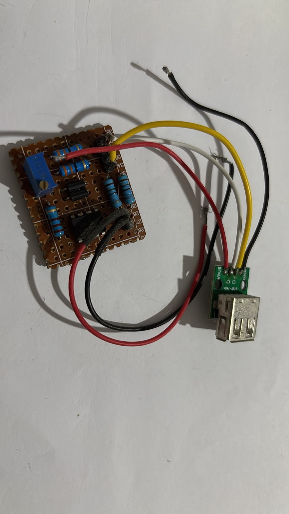
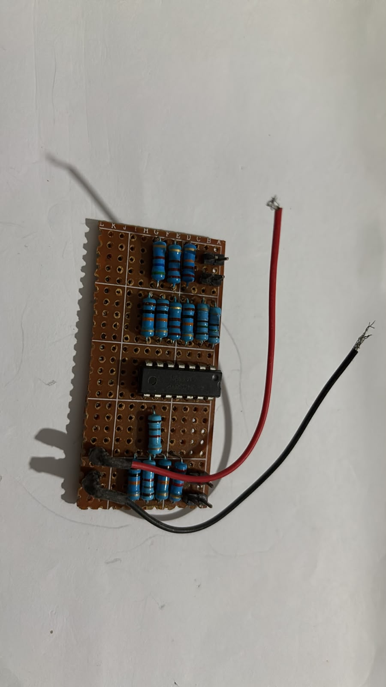
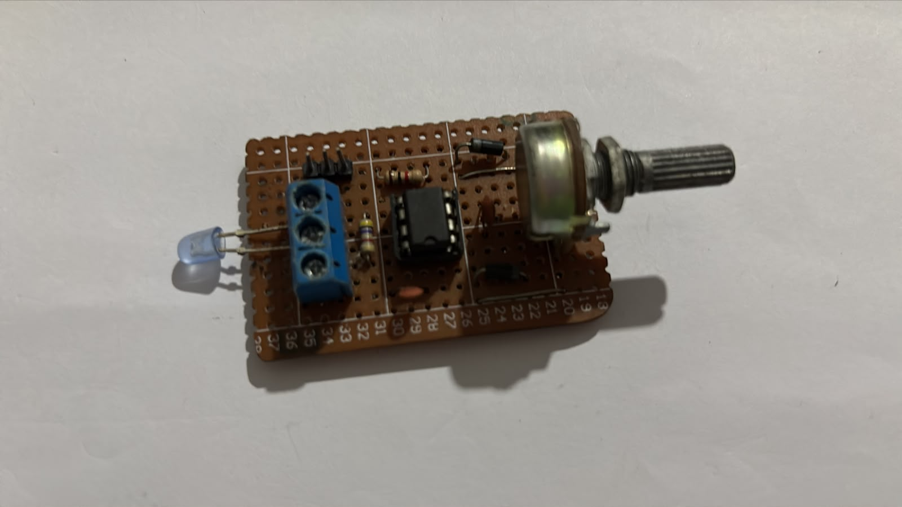
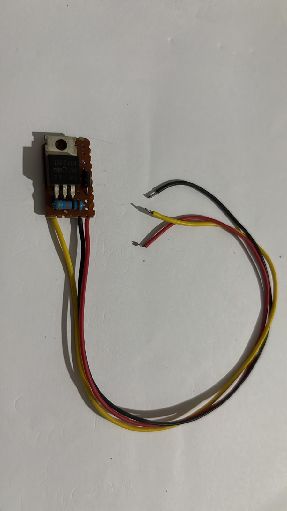

Small circuit builds — USB charging, level indication, PWM generation, and MOSFET drive.
Small Circuit Builds
What it is
A collection of small utility circuits built over the years for bench work — USB phone chargers, battery level indicators, a PWM signal generator, and a single-MOSFET micro motor driver. None of these are research-grade projects, but together they show the range of small-signal and power-electronics work that sits underneath the bigger boards.
What's in the collection

USB charging circuits
Three variants — charging stage, voltage comparison, and current-limit indication. Built to understand the full chain from a raw Li-ion cell to a stable 5V USB output.

Battery level indicator
Comparator-based voltage threshold detection — turns a raw cell voltage into a readable state.

PWM generator
Small analog PWM source — built for testing gate drivers and motor speed control without needing a microcontroller in the loop.

Micro motor driver
Single-MOSFET low-side driver — the smallest motor drive unit I built, before moving to full bridges.
Reference builds
Two battery chargers for 6S and 4S Li-ion packs — assembled from off-the-shelf modules rather than designed from scratch. Included here as part of the pack-building workflow that supports the FPV platforms.